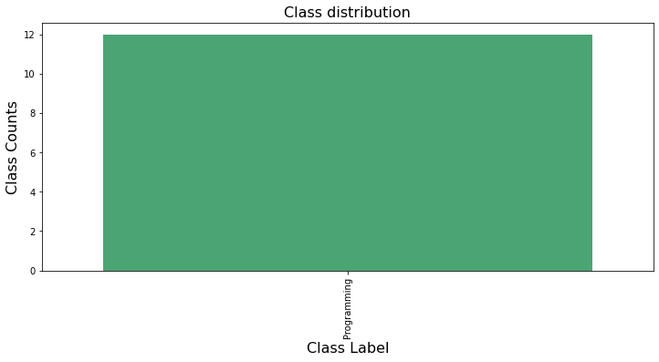

Activity classification¶
Classification of device activities (tracked with ActivityWatch) from EEG data.
# Imports
from eegclassify import main, load, clean, features, preprocess, plot, transform
# Set this to True to run on testing data
simulate_test = False
if simulate_test:
import os
os.environ['PYTEST_CURRENT_TEST'] = "true"
%%javascript
document.title='erb-thesis/Activity - Jupyter' // Set the document title to be able to track time spent working on the notebook with ActivityWatch
# Load data and save into special variable that won't be overwritten (since loading takes a while)
df_loaded = load.load_labeled_eeg2()
09-Jun-21 11:58:00 | WARNING | Using testing data
0%| | 0/102 [00:00<?, ?it/s]
44%|████▍ | 45/102 [00:00<00:00, 440.70it/s]
Concatenating...
Concatenated!
88%|████████▊ | 90/102 [00:00<00:00, 153.96it/s]
100%|██████████| 102/102 [00:00<00:00, 183.54it/s]
# Split into sessions (by date) for LORO CV
df_loaded.describe()
<ipython-input-4-019c796bfa54>:3: FutureWarning: Treating datetime data as categorical rather than numeric in `.describe` is deprecated and will be removed in a future version of pandas. Specify `datetime_is_numeric=True` to silence this warning and adopt the future behavior now.
df_loaded.describe()
<ipython-input-4-019c796bfa54>:3: FutureWarning: Treating datetime data as categorical rather than numeric in `.describe` is deprecated and will be removed in a future version of pandas. Specify `datetime_is_numeric=True` to silence this warning and adopt the future behavior now.
df_loaded.describe()
| start | stop | class | raw_data | |
|---|---|---|---|---|
| count | 2 | 2 | 2 | 2 |
| unique | 2 | 2 | 1 | 2 |
| top | 2020-11-01 13:19:52.494000+00:00 | 2020-11-01 13:19:21.431000+00:00 | Programming | [(2020-11-01 13:18:47.376000166+00:00, -136.23... |
| freq | 1 | 1 | 2 | 1 |
| first | 2020-11-01 13:18:47.374000+00:00 | 2020-11-01 13:19:21.431000+00:00 | NaN | NaN |
| last | 2020-11-01 13:19:52.494000+00:00 | 2020-11-01 13:20:22.553000+00:00 | NaN | NaN |
# Preprocess
df = df_loaded
df = preprocess.split_rows(df, min_duration=5)
#df = clean.clean(df)
df
| start | stop | class | raw_data | |
|---|---|---|---|---|
| 0 | 2020-11-01 13:18:47.374000+00:00 | 2020-11-01 13:18:52.374000+00:00 | Programming | [(2020-11-01 13:18:47.376000166+00:00, -136.23... |
| 1 | 2020-11-01 13:19:52.494000+00:00 | 2020-11-01 13:19:57.494000+00:00 | Programming | [(2020-11-01 13:19:52.497999907+00:00, 526.855... |
| 2 | 2020-11-01 13:18:52.374000+00:00 | 2020-11-01 13:18:57.374000+00:00 | Programming | [(2020-11-01 13:18:52.376000166+00:00, -866.21... |
| 3 | 2020-11-01 13:19:57.494000+00:00 | 2020-11-01 13:20:02.494000+00:00 | Programming | [(2020-11-01 13:19:57.497999907+00:00, -1000.0... |
| 4 | 2020-11-01 13:18:57.374000+00:00 | 2020-11-01 13:19:02.374000+00:00 | Programming | [(2020-11-01 13:18:57.376000166+00:00, -443.84... |
| 5 | 2020-11-01 13:20:02.494000+00:00 | 2020-11-01 13:20:07.494000+00:00 | Programming | [(2020-11-01 13:20:02.497999907+00:00, -114.74... |
| 6 | 2020-11-01 13:19:02.374000+00:00 | 2020-11-01 13:19:07.374000+00:00 | Programming | [(2020-11-01 13:19:02.376000166+00:00, -1000.0... |
| 7 | 2020-11-01 13:20:07.494000+00:00 | 2020-11-01 13:20:12.494000+00:00 | Programming | [(2020-11-01 13:20:07.497999907+00:00, -998.53... |
| 8 | 2020-11-01 13:19:07.374000+00:00 | 2020-11-01 13:19:12.374000+00:00 | Programming | [(2020-11-01 13:19:07.376000166+00:00, -1000.0... |
| 9 | 2020-11-01 13:19:12.374000+00:00 | 2020-11-01 13:19:21.431000+00:00 | Programming | [(2020-11-01 13:19:12.376000166+00:00, 817.383... |
| 10 | 2020-11-01 13:20:12.494000+00:00 | 2020-11-01 13:20:17.494000+00:00 | Programming | [(2020-11-01 13:20:12.497999907+00:00, -1000.0... |
| 11 | 2020-11-01 13:20:17.494000+00:00 | 2020-11-01 13:20:22.553000+00:00 | Programming | [(2020-11-01 13:20:17.497999907+00:00, 130.859... |
plot.classdistribution(df)

# Can we do PCA on the signal?
X, y = transform.signal_ndarray(df)
print(X.shape)
#plot.pca(X, y)
{'Programming': 0}
(12, 4, 1250)
# df = _remove_rare(df, "class", threshold_count=50)
df = clean._select_classes(
df,
"class",
["Editing->Code", "Editing->Prose"] #, "GitHub->Issues", "GitHub->Pull request"],
)
# Train
try:
main._train_raw(df)
except Exception as e:
# TODO: Fix testing data such that it doesn't err
print("Error while training", e)
{'Programming': 0}
Error while training With n_samples=0, test_size=0.3 and train_size=None, the resulting train set will be empty. Adjust any of the aforementioned parameters.
try:
main._train_features(df)
except Exception as e:
# TODO: Fix testing data such that it doesn't err
print("Error while training", e)
Error while training With n_samples=0, test_size=0.3 and train_size=None, the resulting train set will be empty. Adjust any of the aforementioned parameters.